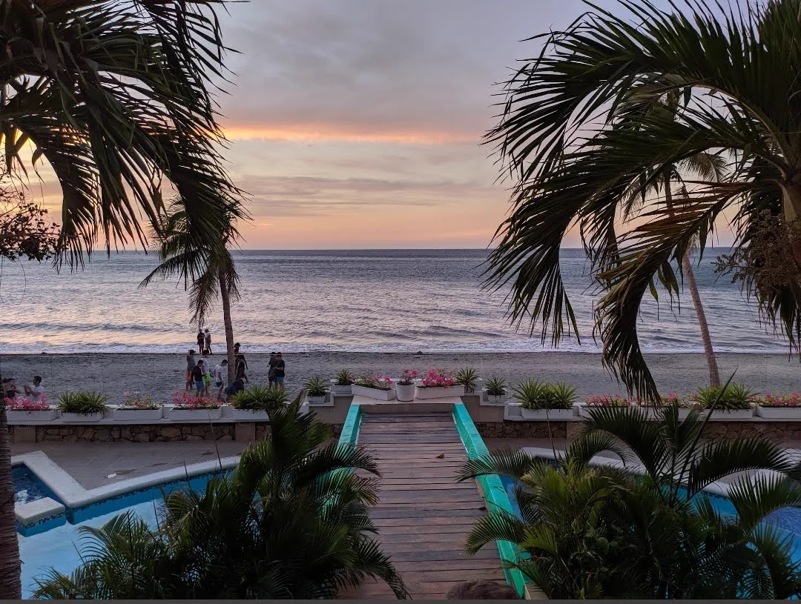
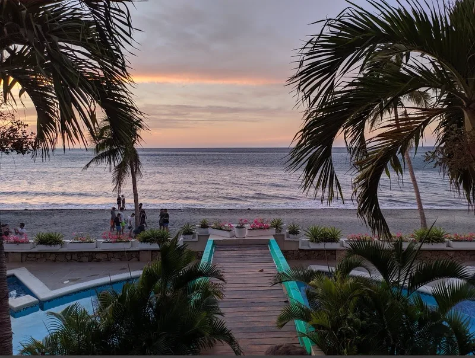
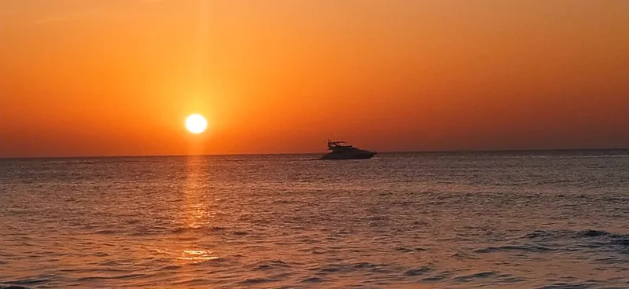

Nivel social
Para la vida en común
- Sala-comedor con sofá cama y Smart TV
- Cocina tipo americana con barra desayunadora
- Baño completo y cuarto de lavandería
- Balcón con vista lateral al mar
- Ventiladores de techo y de pie

Playa Salguero · Santa Marta
Suite dúplex en el Edificio Nautilus, con piscina, salida directa a la playa y los atardeceres más lindos de Santa Marta. Reserve directo y seguro.
01
Bienvenidos al Nautilus
Premio nacional de arquitecturapor su estructura innovadora
El Edificio Nautilus tiene la silueta de un barco, y su estructura le valió un premio nacional de arquitectura. La suite está frente al mar, en Playa Salguero: del balcón a la arena hay apenas quince metros. Es la continuación tranquila de El Rodadero —muchos la llaman Rodadero Sur—, con poca gente y pocos vendedores.
Aquí el lujo es despertar con el sonido del mar.

02
La suite
Un dúplex pensado para compartir: arriba se vive, abajo se descansa. Es de uso exclusivo de quien reserva, nunca se comparte con otros huéspedes.
Nivel social
Nivel de descanso
03
Reservar
Elija sus fechas y le escribimos por WhatsApp con la tarifa. El anfitrión confirma el anticipo y bloquea las fechas para usted.
04
Galería
05
En video
Desde que llegas, todo es tal como lo imaginaste: la vista al mar, las palmeras y ese camino que te lleva directo a la playa. Queremos que vivas el lugar tal como te lo mostramos.
06
Experiencias
Un plan de 3 días pensado para disfrutar Santa Marta como te la recomendaría un amigo: nuestros lugares favoritos, experiencias que vale la pena vivir y esas escapadas que sí merecen madrugar.
En portería le entregan la manilla del edificio, que abre la piscina y la puerta a la playa.
La playa queda a quince metros del balcón y el sol cae justo al frente. Pocas cosas se sienten tan de vacaciones.
Gastrobar con vista a la bahía de El Rodadero. El favorito del anfitrión para la primera noche.
Sale desde El Rodadero. Arena clara y agua tranquila para el primer chapuzón del día.
Un canopy une Playa Blanca con el Acuario. No se pierda el túnel submarino.
Donde Chucho, El Velero, Catamarán o Cheff del Mar: cualquiera de los cuatro, con pescado del día.
Abre de 9 a. m. a 8 p. m. y tiene zona para niños. Los lunes cierra por mantenimiento.

La hacienda donde murió Simón Bolívar, rodeada de jardines centenarios.
La Plaza de Bolívar, el Museo del Banco de la República y el malecón, de la estatua de los Arhuacos hasta La Marina.
Restaurantes con auténtico ambiente bohemio caribeño. Llegue al caer la tarde.
Playas vírgenes entre selva, con senderos hasta Cabo San Juan.
Aprox. 1 h en carroPueblo de pescadores y, según el anfitrión, el buceo más económico de Suramérica. Deje 24 horas entre la última inmersión y el vuelo.
Aprox. 30 minAguas quietas y sombra natural, ideal para ir en familia.
Aprox. 45 minAgua transparente para hacer snorkel dentro del Tayrona.
Aprox. 1 h + lanchaRío que desemboca en el mar y bajada en neumático entre la selva.
Aprox. 2 h 30 minCascadas, fincas cafeteras y miradores en la Sierra Nevada.
Aprox. 1 hTiempos aproximados en carro desde la suite; varían con el tráfico y la temporada.
07
La carta del Caribe
Olímpica, Ara, D1, Rapimercar y Carulla (C. C. Arrecife) reciben todo tipo de pago. A cuatro cuadras hay minimercado y tienda, y Rodasur lleva mercado y comidas a domicilio sin recargo.
08
Lo que dicen los huéspedes
4,6/5
183 reseñas en Airbnb · 75 % de cinco estrellas
Un lugar increíble. Lo que más me gustó fue que está justo frente al mar.
Tiene playa propia, muy poca gente, tranquila.
Excelente anfitrión, ¡volvería a reservar!
Anfitrión con 11 años de experiencia · responde en menos de una hora
09
Ubicación
El Rodadero es el sector turístico de Santa Marta; lo separa de la bahía de la ciudad el cerro Ziruma. Playa Salguero es su continuación hacia el sur: un barrio residencial, moderno y seguro, con supermercados y restaurantes cerca.
Tarifas de taxi de referencia: pregunte el valor antes de subir. En portería le piden un taxi sin costo, y el paradero del bus queda a cuadra y media.
Edificio Nautilus · Playa Salguero, Gaira, Santa Marta. Las indicaciones exactas de llegada se envían al confirmar la reserva.
10
Bueno saber
Las preguntas que más llegan por chat, respondidas por el anfitrión.
La entrada es entre las 3:00 y las 6:00 p. m. y la salida antes de las 12:00 m. Como es un edificio residencial, no hay servicio de guardar maletas: la hora exacta de llegada va en la carta de autorización que recibe días antes.
Sí. La administración del edificio cobra $20.000 por persona una sola vez, por la manilla que da acceso a la piscina, la playa y las zonas comunes. Ese valor lo recibe el edificio, no el anfitrión.
Tendido para cada cama y una toalla por persona (en estadías de menos de siete días), papel higiénico, jabón y shampoo de cortesía, cocina dotada para cinco, plancha y caja fuerte. No incluye comida.
No. Es un apartamento privado dentro de un edificio residencial, así que no hay servicio a la habitación ni aseo diario. A cambio tiene cocina, espacio y privacidad de casa propia.
En el nivel de descanso. El nivel social se refresca con ventiladores de techo y de pie. Para que el aire rinda, conviene cerrar las puertas del balcón y los baños.
La piscina es del edificio, abre de 9:00 a. m. a 8:00 p. m. y los lunes cierra por mantenimiento. Desde allí una puerta lleva directo a la playa. Antes de subir, las duchas de la zona de piscina quitan la arena.
En Santa Marta no se recomienda. Para beber y cocinar, mejor agua en bolsa o garrafón; la venden en cualquier tienda cercana.
Es clima cálido, así que conviene guardar los alimentos en la nevera y usar repelente. De diciembre a marzo sopla la brisa que los samarios llaman «La Loca», que ayuda a alejarlos.
Una mascota pequeña, con un costo adicional. Hay zonas verdes cerca para pasearla.